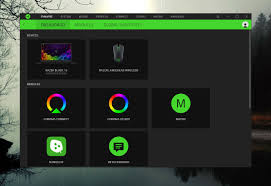

Trabajo Sitio Web (Ratón)
Instalación del ratón
La instalación de un ratón normalmente es un proceso realmente sencillo, ya que simplemente conectándolo mediante USB (o antiguamente por el conector rosa de ratón) el PC ya te lo reconoce automáticamente con los drivers del sistema operativo pero hay algunas excepciones:
Software
Pero hay algunos ratones, especialmente los "gamer" que tienen software dedicado para su correcto funcionamiento, como es el caso del Razer Synapse, que puede aumentar su precisión para juegos o cambiar sus luces de color
Daniel García Campoy 1ºDAM